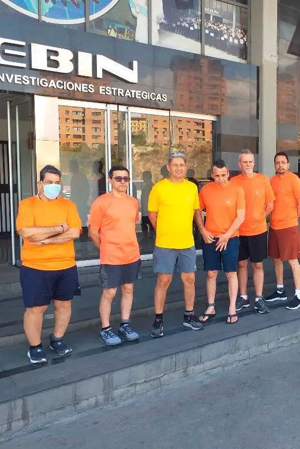

Elite DailyYesterday

Bella Hadid Had A Dress Spray-Painted Onto Her Body While Closing The Coperni Show
Trending in Science
Starship
55.5k Tuits
Sports. Trending
Virat Kohli
59.5k Tuits
The New York Times Yesterday 
Lawmakers Confront a Rise in Threats and Intimidation, and Fear Worse
Elite DailyYesterday
Bella Hadid Had A Dress Spray-Painted Onto Her Body While Closing The Coperni Show
COVID-19. Yesterday

COVID-19 Updates in United States. Cases are going down, people are getting back to work
US Elections. Live
Massachusetts: Election news and updates